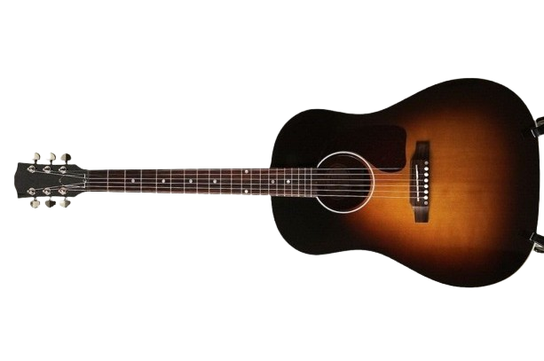

A Standard Guitar
Neck
- typically consists of a fingerboard (or fretboard) where the frets are located, allowing players to press down on the strings to create different notes.
Guitar Box
- hollow part of the guitar that serves as the base and also play an important role in the acoutiscs.